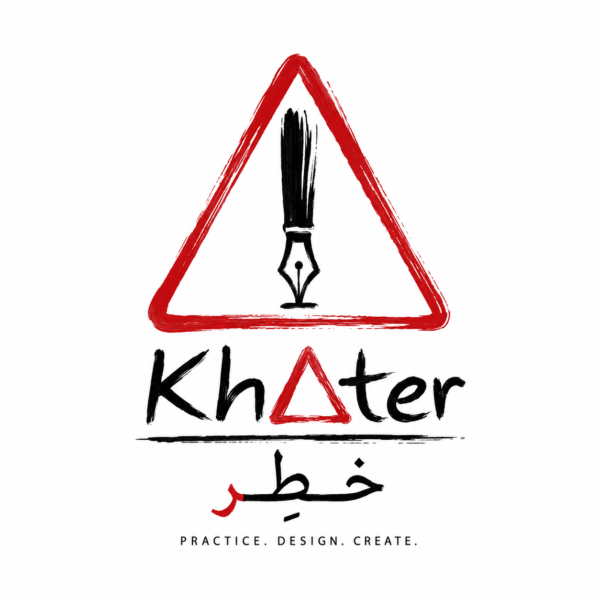
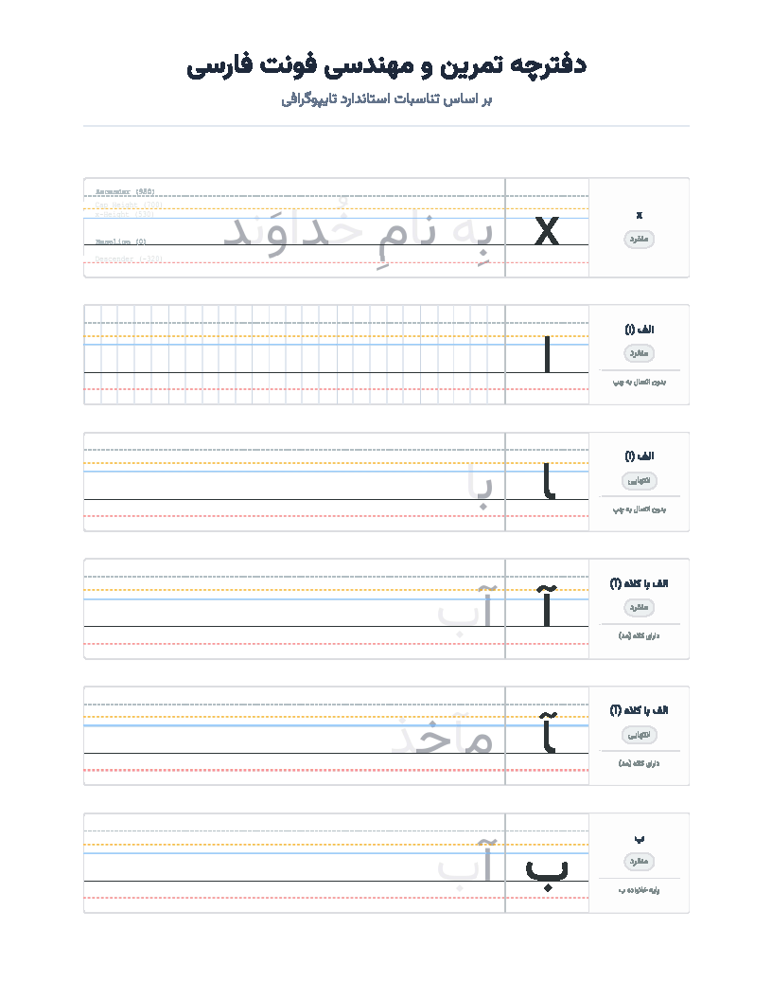

Font metrics
Set UPM and vertical metrics manually or read available metrics from a font file.
A workbook for Persian type design
KhAter is a browser-based tool for exploring font metrics and glyphs, preparing practice sheets, and exporting design references for Persian and Arabic scripts.

Set UPM and vertical metrics manually or read available metrics from a font file.
Review glyph forms, advance widths, and available kerning information.
Manage workbook data with Excel and create SVG, PNG, and browser-printed PDF references.

No desktop installation or account is required for normal use. Font and workbook processing runs client-side in the browser. Source code is MIT licensed; project artwork and generated outputs use CC BY-NC 4.0.
Read the project setup guide